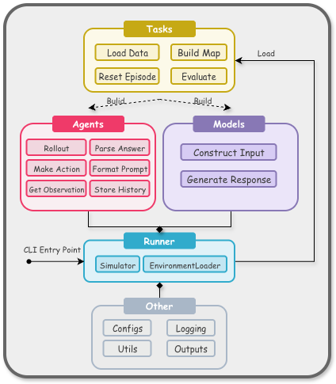
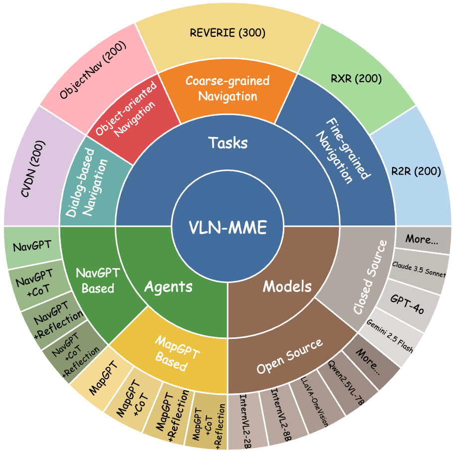
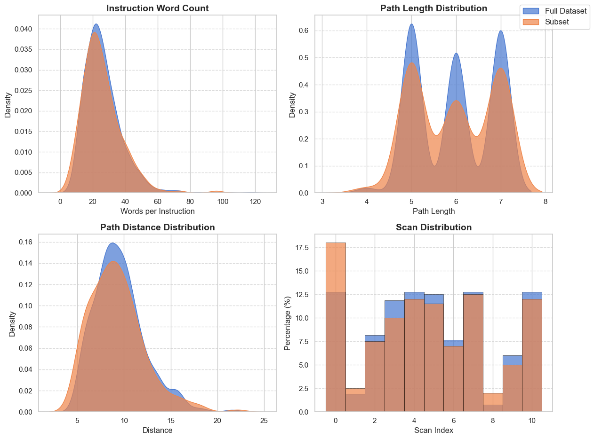
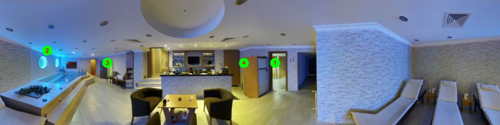
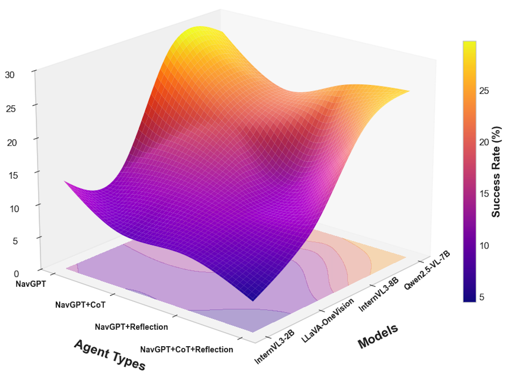
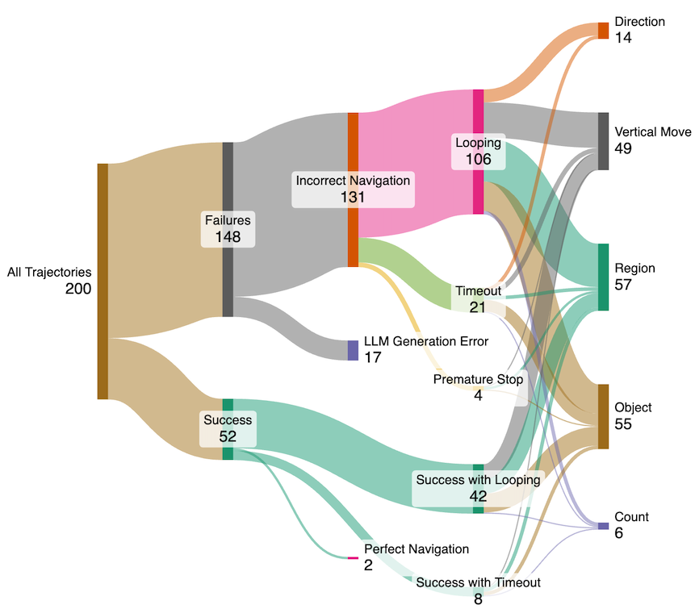
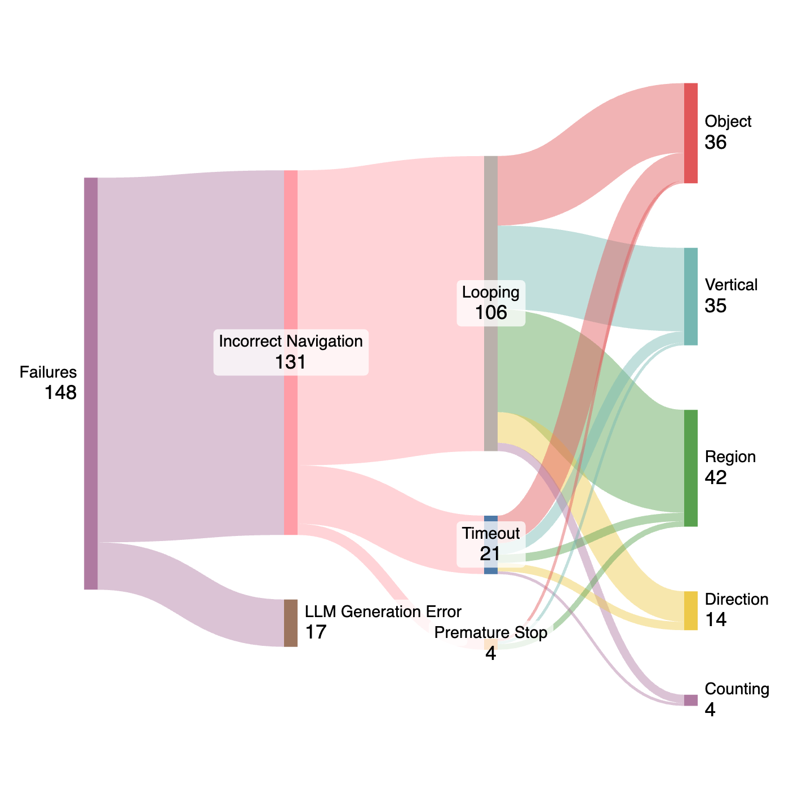
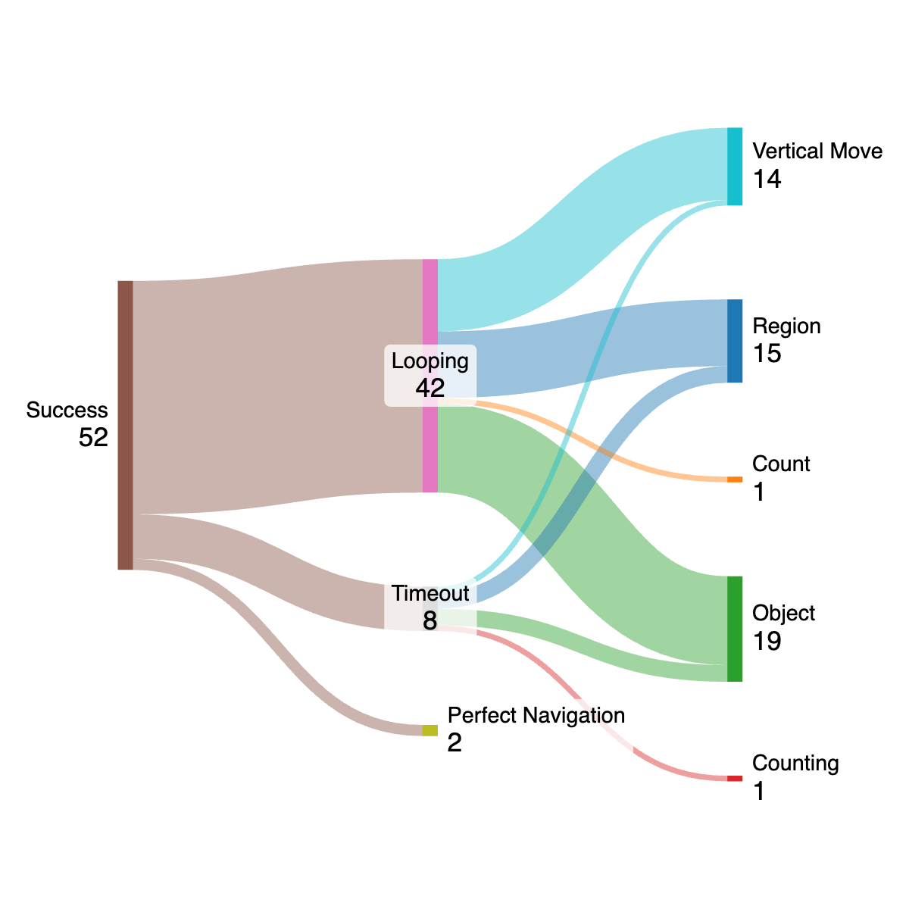
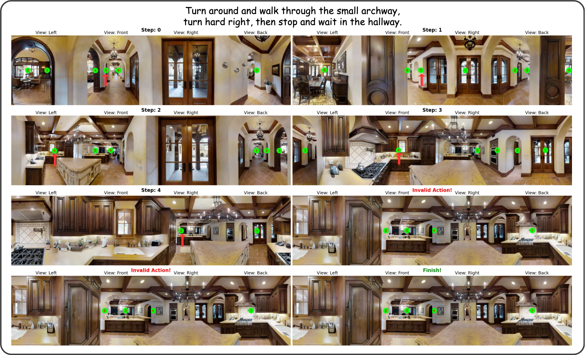
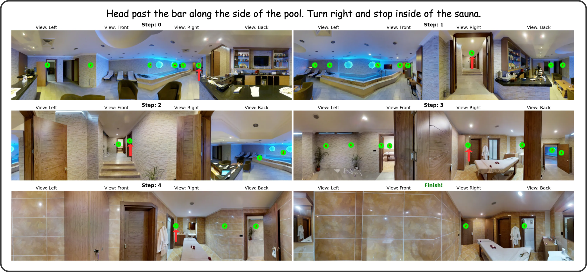

Unified evaluation
Models, agents, and tasks are treated as interchangeable components under one evaluation interface.
Overview
VLN-MME is designed to diagnose how MLLMs behave as language-guided visual navigation agents, not just whether they reach the goal.
Models, agents, and tasks are treated as interchangeable components under one evaluation interface.
Pre-rendered observations and graph metadata remove the need to install Matterport3D or Habitat simulators.
The benchmark compares memory formats, CoT prompting, reflection, and MLLM backbones under consistent tasks.
Step-level trajectory inspection reveals looping, weak historical grounding, and perception-action gaps.
Framework
The implementation separates model APIs, agent prompting and memory, navigation tasks, environment loading, and evaluation logging.
The Model interface handles open-weight and proprietary MLLMs. The Agent converts state into prompts, stores history, parses model output, and selects actions. The Task encapsulates dataset splits, maps, and evaluation metrics.
A central Runner coordinates loading, rollout, logging, and metric computation, allowing component-level comparisons without rewriting the evaluation loop.


Composition
VLN-MME is organized around the interaction between navigation tasks, agent architectures, and MLLM backbones. This makes it possible to diagnose whether a result comes from model capability, memory design, reasoning prompts, or task granularity.
Benchmark
The paper evaluates representative navigation tasks across fine-grained instructions, coarse-grained referring expressions, and object-oriented navigation.

VLN-MME constructs compact but representative evaluation subsets so large MLLM agents can be compared without exhaustive simulator runs.
Observation
VLN-MME replaces online simulator rendering with pre-rendered, agent-centric observations and semantic metadata.

Agent-centric panoramic input avoids dense image sweeps and distorted stitched panoramas.
Runtime memory compared with about 10GB for simulator-based evaluation.
Observation access compared with about 0.14s when rendering online.
Approximate per-episode time saved by avoiding simulator rendering overhead.
Results
The results expose a gap between formatted reasoning and usable embodied context awareness.
Proprietary MLLMs such as GPT-5 and Gemini-2.5 Pro set the strongest zero-shot upper bound, while Qwen2.5-VL-7B is a robust open-weight baseline.
Counterintuitively, adding CoT or reflection often hurts navigation. For Qwen2.5-VL-7B on fine-grained navigation, CoT reduces success rate from 27.5% to 21.0%, indicating that explicit reasoning traces can fail to use historical context.

Main Table
The paper table reports eight metrics for each navigation category. On the website, the same comparison is condensed to the most readable success-efficiency pair: SR and SPL for fine-grained, coarse-grained, and object-oriented navigation.
The pattern is consistent with the paper discussion: proprietary models define the upper bound, Qwen2.5-VL-7B is the strongest open-weight baseline in several settings, and explicit CoT/reflection often reduces navigation success rather than improving it.
| Agent / MLLM | Fine SR | Fine SPL | Coarse SR | Coarse SPL | Object SR | Object SPL |
|---|---|---|---|---|---|---|
| Text Summarization Memory Agents | ||||||
| NavGPT | ||||||
| GPT-5 | 38.50 | 29.23 | 30.00 | 20.76 | 48.00 | 23.84 |
| Gemini-2.5 Pro | 41.00 | 32.67 | 33.50 | 24.38 | 51.50 | 27.19 |
| InternVL3-2B | 13.50 | 5.46 | 7.33 | 2.50 | 21.50 | 3.57 |
| InternVL3-8B | 28.00 | 12.61 | 20.00 | 7.18 | 39.00 | 7.69 |
| LLaVA-OV-7B | 11.50 | 4.94 | 14.67 | 5.19 | 27.50 | 4.51 |
| Qwen2.5-VL-7B | 27.50 | 17.11 | 18.67 | 9.00 | 37.50 | 13.18 |
| NavGPT w/ CoT | ||||||
| GPT-5 | 36.00 | 27.31 | 28.50 | 20.42 | 46.50 | 23.67 |
| Gemini-2.5 Pro | 32.50 | 23.88 | 24.00 | 16.93 | 42.00 | 19.27 |
| InternVL3-2B | 8.00 | 4.47 | 5.33 | 3.24 | 25.00 | 6.66 |
| InternVL3-8B | 19.00 | 10.95 | 15.33 | 9.31 | 34.50 | 12.67 |
| LLaVA-OV-7B | 12.50 | 5.41 | 14.00 | 5.90 | 33.50 | 7.31 |
| Qwen2.5-VL-7B | 21.00 | 11.41 | 15.67 | 8.10 | 33.00 | 13.25 |
| NavGPT w/ Reflection | ||||||
| GPT-5 | 33.00 | 24.18 | 25.00 | 17.34 | 43.00 | 20.62 |
| Gemini-2.5 Pro | 37.50 | 28.73 | 29.00 | 21.68 | 47.50 | 25.14 |
| InternVL3-2B | 8.00 | 5.20 | 8.50 | 4.80 | 28.00 | 7.83 |
| InternVL3-8B | 12.00 | 9.53 | 11.00 | 5.97 | 32.50 | 9.12 |
| LLaVA-OV-7B | 10.50 | 9.44 | 9.33 | 5.82 | 34.00 | 7.90 |
| Qwen2.5-VL-7B | 24.00 | 14.95 | 12.00 | 7.97 | 35.50 | 14.67 |
| NavGPT w/ CoT & Reflection | ||||||
| GPT-5 | 38.50 | 29.81 | 30.00 | 22.17 | 48.50 | 25.92 |
| Gemini-2.5 Pro | 34.00 | 25.74 | 25.50 | 18.36 | 43.50 | 21.28 |
| InternVL3-2B | 4.50 | 1.70 | 9.33 | 4.63 | 24.50 | 7.26 |
| InternVL3-8B | 22.00 | 15.33 | 17.33 | 10.07 | 32.50 | 8.14 |
| LLaVA-OV-7B | 10.00 | 5.83 | 14.00 | 6.78 | 28.50 | 7.25 |
| Qwen2.5-VL-7B | 25.50 | 17.68 | 11.67 | 7.89 | 36.00 | 13.67 |
| Text Map Memory Agents | ||||||
| MapGPT | ||||||
| GPT-5 | 34.00 | 25.83 | 26.00 | 18.29 | 44.00 | 20.91 |
| Gemini-2.5 Pro | 39.50 | 30.72 | 31.50 | 23.16 | 49.50 | 26.24 |
| InternVL3-2B | 11.00 | 3.71 | 12.00 | 4.41 | 27.50 | 4.41 |
| InternVL3-8B | 18.00 | 12.46 | 13.67 | 7.87 | 31.50 | 11.61 |
| LLaVA-OV-7B | 8.50 | 5.59 | 14.67 | 6.48 | 22.50 | 4.28 |
| Qwen2.5-VL-7B | 26.00 | 17.31 | 21.67 | 8.96 | 36.50 | 11.05 |
| MapGPT w/ CoT | ||||||
| GPT-5 | 32.50 | 27.14 | 24.50 | 19.68 | 44.50 | 23.21 |
| Gemini-2.5 Pro | 31.00 | 23.37 | 23.00 | 15.84 | 39.50 | 18.76 |
| InternVL3-2B | 6.50 | 4.12 | 4.00 | 1.58 | 20.00 | 4.76 |
| InternVL3-8B | 12.00 | 9.66 | 13.33 | 8.77 | 34.00 | 12.33 |
| LLaVA-OV-7B | 8.50 | 2.83 | 8.67 | 3.38 | 16.00 | 4.14 |
| Qwen2.5-VL-7B | 17.00 | 10.47 | 16.33 | 10.61 | 32.00 | 9.95 |
| MapGPT w/ Reflection | ||||||
| GPT-5 | 36.50 | 28.19 | 25.50 | 20.73 | 45.50 | 23.65 |
| Gemini-2.5 Pro | 32.00 | 24.31 | 24.00 | 16.88 | 41.00 | 19.94 |
| InternVL3-2B | 4.00 | 3.26 | 3.67 | 3.31 | 25.00 | 4.50 |
| InternVL3-8B | 16.50 | 10.89 | 12.67 | 6.64 | 30.00 | 10.36 |
| LLaVA-OV-7B | 10.00 | 5.50 | 11.00 | 6.00 | 15.50 | 2.02 |
| Qwen2.5-VL-7B | 26.50 | 10.12 | 15.67 | 6.00 | 33.50 | 7.41 |
| MapGPT w/ CoT & Reflection | ||||||
| GPT-5 | 34.50 | 26.13 | 24.50 | 18.67 | 42.50 | 21.79 |
| Gemini-2.5 Pro | 30.00 | 22.28 | 22.00 | 15.41 | 38.00 | 17.86 |
| InternVL3-2B | 9.00 | 4.88 | 4.67 | 1.61 | 18.00 | 4.74 |
| InternVL3-8B | 18.00 | 10.84 | 13.00 | 6.06 | 33.50 | 8.01 |
| LLaVA-OV-7B | 13.00 | 5.81 | 9.00 | 4.53 | 24.50 | 5.45 |
| Qwen2.5-VL-7B | 14.00 | 7.12 | 10.67 | 6.68 | 25.50 | 6.78 |
Compact rendering of `Tab/main_table.tex`: SR and SPL are retained for readability; the paper PDF contains TL, NE, nDTW, SDTW, CLS, and OSR as well.
Diagnostics
VLN-MME turns aggregate failure into interpretable behavioral patterns at the trajectory level.

Among 200 analyzed trajectories, 148 fail and 52 succeed. Of the failures, 131 are incorrect navigation rather than generation-format errors, and 106 involve looping.
Even successful episodes are often inefficient: 42 of 52 successes include looping behavior before reaching or stopping near the target. This points to weak state tracking, poor historical grounding, and incomplete translation from perception to action.


Looping is the dominant incorrect-navigation pattern, reflecting unstable spatial memory and weak long-horizon correction.
Diagnostic Study
The paper revisits 25 fine-grained hard-negative trajectories where all open-weight models failed with the standard text-summary agent.
A stronger Qwen3VL oracle assistant provides high-level reasoning guidance when the navigator loops, enters a wrong region, or moves in a critically wrong direction. The jump from 0% SR to 52% SR suggests the base navigator has some visual grounding, but lacks strategic planning and error-correction logic.
| Method | SR | OSR | SPL |
|---|---|---|---|
| Baseline Qwen2.5VL-7B | 0.00 | 0.00 | 0.00 |
| + Oracle Assistant | 52.00 | 68.00 | 41.28 |
Instead of direct oracle support, the model receives examples of common failure cases in the prompt. This improves performance modestly, but remains far below the oracle-guided setting, indicating that awareness of failure modes helps less than active reasoning assistance.
| Method | SR | OSR | SPL |
|---|---|---|---|
| Zero-shot baseline | 0.00 | 0.00 | 0.00 |
| 1-shot failure example | 12.00 | 24.00 | 9.42 |
| 2-shot failure examples | 16.00 | 28.00 | 11.25 |
| 3-shot failure examples | 16.00 | 32.00 | 14.29 |
Case Studies
The paper case studies show successful but inefficient paths, vertical-movement confusion, invalid outputs, and region-understanding failures.

The agent sees the treadmill, loops through nearby rooms, and only later stops by the target.

The agent eventually succeeds, but staircase positioning causes repeated local corrections.

The agent reaches the correct general area but fails to stop and loops on the staircase.

A directional grounding error is compounded by malformed output that yields an invalid action.

The agent cannot correctly interpret and enter the specified target region, the sauna.
Quick Start
The framework downloads processed VLN annotations, marked observations, connectivity graphs, captions, and environment metadata.
conda create --name VLNMME python=3.10
conda activate VLNMME
pip install -r requirements.txt
cd src
python main.py --config_dir configs/experiment.yamlCitation
If VLN-MME is useful for your research, please cite the project.
@article{zhao2025vln,
title={VLN-MME: Diagnosing MLLMs as Language-guided Visual Navigation agents},
author={Zhao, Xunyi and Zhou, Gengze and Wu, Qi},
journal={arXiv preprint arXiv:2512.24851},
year={2025}
}{kind=link}
{kind=link}